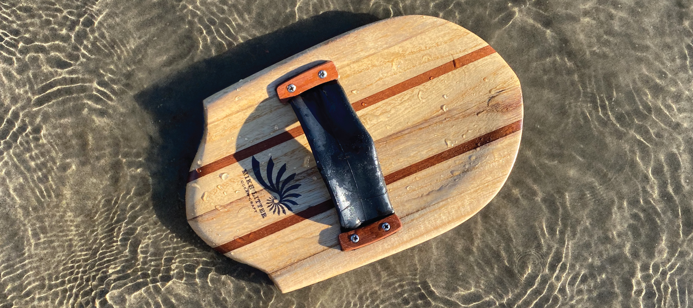
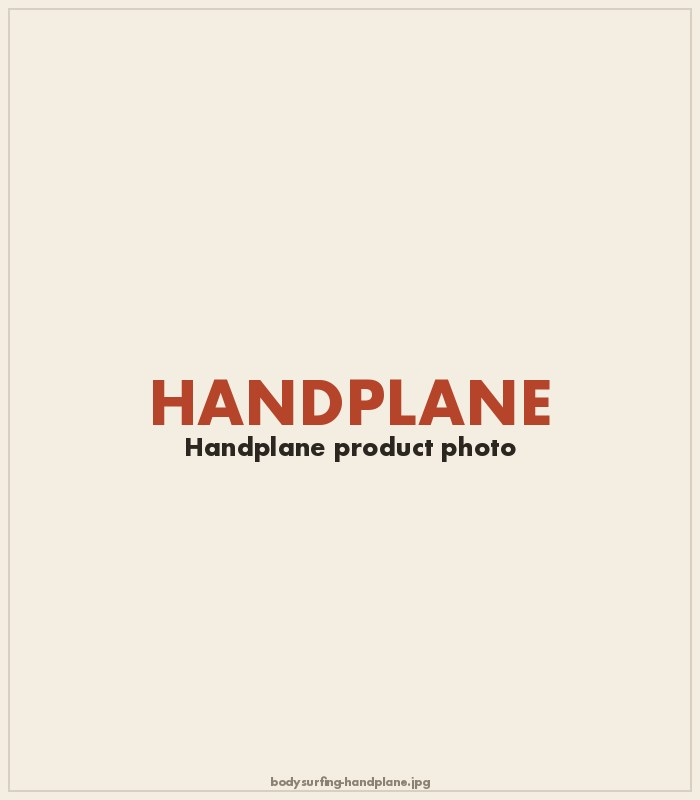
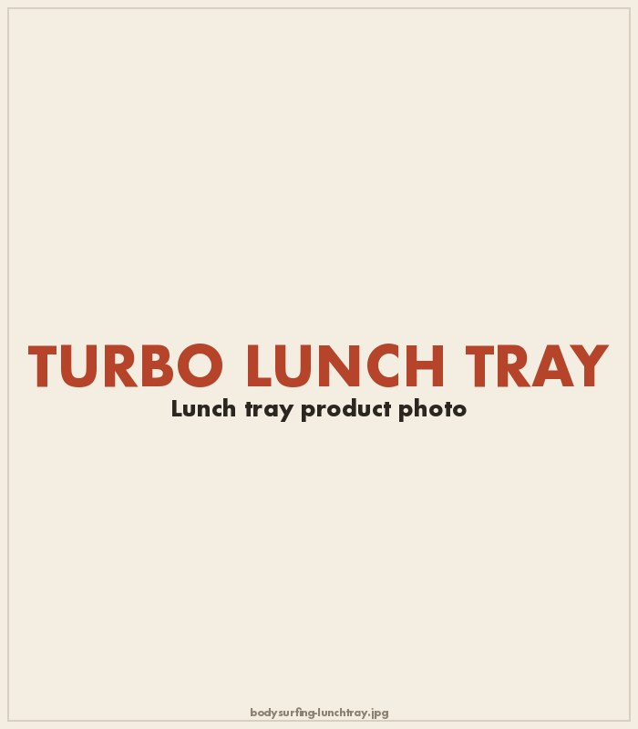
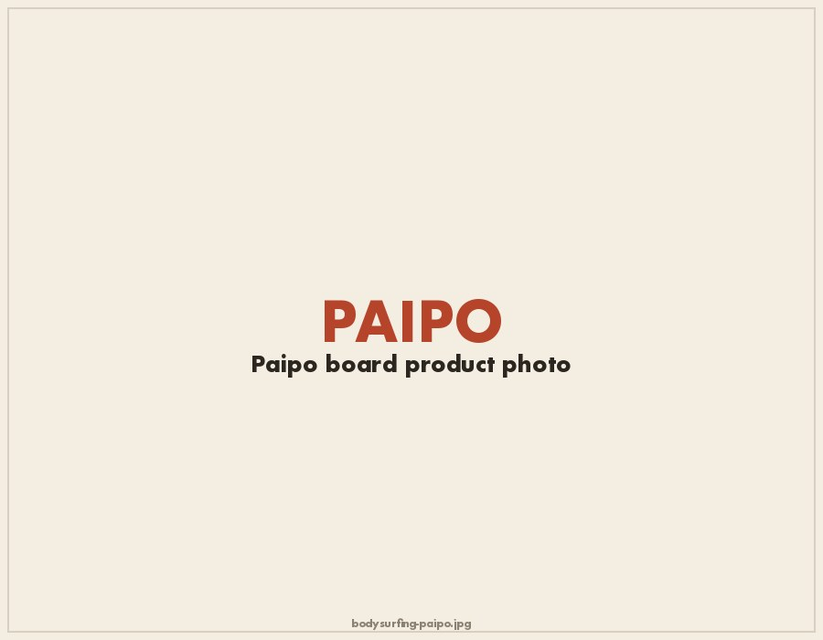

Imagine a waterperson's food pyramid. At the top you might have something epic and gear intensive like deepwater offshore sailing. In the middle there are the hard earned skills like outrigger and surfing. The foundation is the simple things we did as children: swimming, body surfing and diving. Bodysurfing is pure play, and thus, handplanes are nothing pretentious—just toys. If you don't already body surf, I recommend it for its simplicity and joy. If you do, you know what I'm talking about.
Bodysurfing is the simplest form of surfing a wave. You don't really need anything to do it, but a handplane creates just enough lift and steerage to maneuver into tight little tubes. For the strapped versions, a reused mountain bike inner tube serves as the perfect stretchy hand strap. The unstrapped variety boasts my proprietary four finger bowling ball tech! The former model maximizes low drag while the latter maximizes minimalism and ease of switching from hand to hand when surfing a peaky beach break.

The lunch tray is my personal favorite bodysurfing toy. The turbo lunch tray is an evolution of the grom-friendly plastic lunch trays that found their way into the lineup in the 1950s during the early Macdonald's era. The lunch tray-sized plane allows for a two handed grip and enough extra lift to achieve something close to boogie boarding speeds. The hand routed "alien eyes" are there for extra grip.

The Paipo is the centuries-old predecessor of the bodyboard. The name is a shortened version of the Hawaiian phrase "pae po'o," which literally translates to "to surf headfirst." These stiff yet thin boards are wicked fast and fun.

The alaia was the daily driver for pre-colonial Hawaiians and represents the first stand up surfboard design. The Hawaiian royalty also surfed a larger version called an Olo, which could reach over twenty feet long. Just like the Paipo, the Alaia are finless and an inch thick or less. They are meant to be turned using the highly foiled rail. Alaia surfing is notoriously difficult but, once mastered, offers unparalleled frictionless speed.